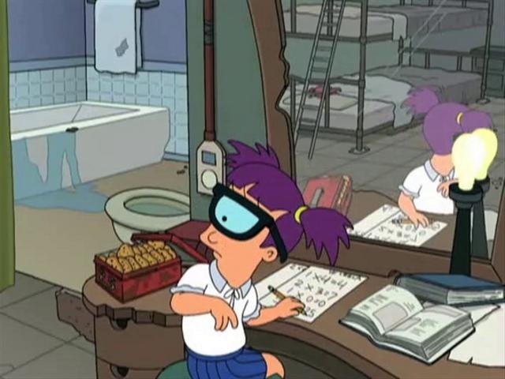

Todos os posts
Recomendações de episódios
Atualizado: Mar 8
Aqui serão listados os melhores os episódios que acredito valer a pena assistir.

O atraso de Fry- 6° Temporada, episódio 7
Apesar do humor crítico presente, em minha opinião, esse é o episódio mais emocionante sobre o caso amoroso de Fry e Leela
De volta ao passado- 4° Temporada, episódio 7
Esse episódio apresenta partes tristes envolvendo a fraqueza de várias pessoas, cachorros, e entre tais há um desenvolto do ciúme de Bender sobre Fry
Godfellas- 4° Temporada, episódio 8
Esse episódio nos faz refletir. Seu tema foi a aventura de Bender como 'Deus' para uma raça alienígena de anões.